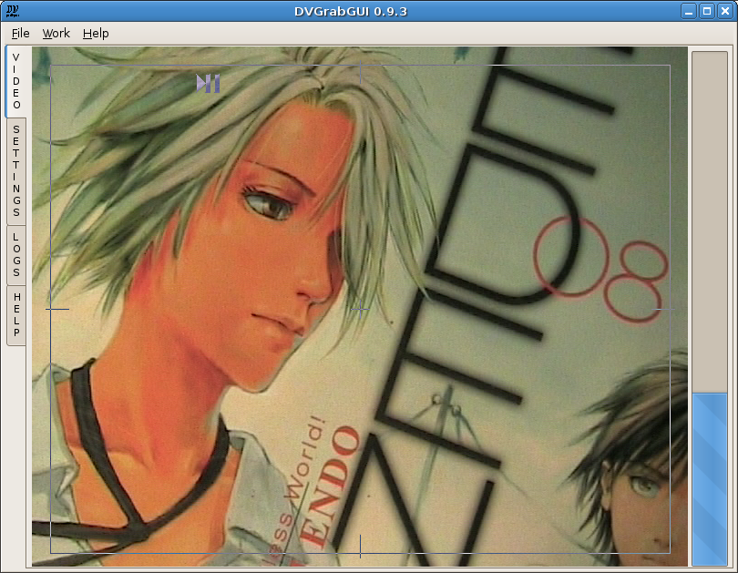

Prev: Reference → Video Window --- ↑Home --- Next: Reference → Settings → Capture
DVGrabGUI 0.9.4
Reference → Video Window ("Small" mode)
This GUI mode was designed to be used with a small touch-screen of definition
800×600, so the main window shows nearly only the dv video!

-
The four side tabs
As you can see, in "small" mode, the main frame lost its status bar,
and the main tabs are on the left side now.
The "video" window also lost most of its controls, just keeping the
space disk gauge…
-
The "Video" "small" window
-
Video display
This window shows the dv stream when capture thread's running.
It allows you to start/stop capture thread (left-clicking left half
window), and…
It allows you to start/stop capture (left-clicking right half window).
-
Disk Space
This area gives you info about total/remaining disk space (for the
mount point of the directory where you choosed to store your
captured video files).
Prev: Reference → Video Window --- ↑Home --- Next: Reference → Settings → Capture
(c) 2006, 2007, 2008 Bastien Montagne (montagne29 at wanadoo dot fr).
Project hosted at sourceforge.net/projects/dvgrabgui.